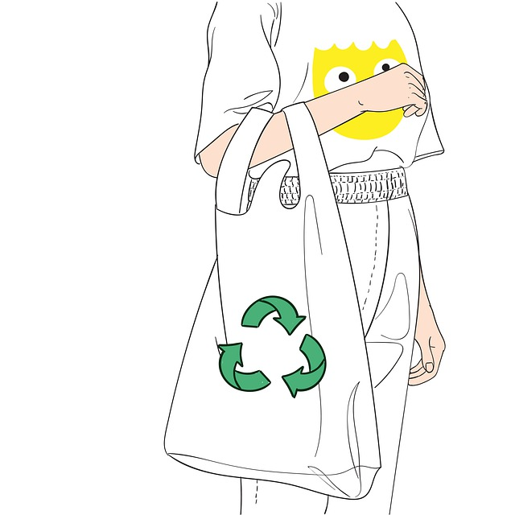

O Co2 tornou-se o grande vilão da intensificação do efeito estufa,
que leva ao aquecimento global do planeta, com consequências que podem ser devastadoras.
Assim, surge uma necessidade urgente de se
reduzir as emissões de Co2 para a atmosfera.
Uma das alternativas seria a captação do Co2 liberado por indústrias e usinas de eletricidade
e enterrá-lo no subsolo, processo conhecido como sequestro.
No entanto, além de ser um processo muito caro,
existe o problema de que, com o tempo, esse gás carbônico tende a subir pelos poros e fissuras do solo
e escapar novamente para a atmosfera.
Além das indústrias também,podemos colaborar com a redução da emissão do dióxido de carbono na atmosfera.
São atitudes muito simples que farão grande diferença lá na frente.
🍃Recicle o seu lixo
Além de evitar a contaminação do solo e lençóis freáticos com o descarte de resíduos,
a reciclagem reduz a necessidade da produção de novos materiais, o que evita que mais CO2 seja gerado.
🍃Apague as luzes
Evite deixar luzes acesas nos ambientes que você não está utilizando
e durante o dia prefira
a luz solar. Tire os aparelhos que você não utiliza diariamente da tomada.
🍃Prefira empresas que se preocupam com o meio ambiente
Pesquise as ações de sustentabilidade das empresas antes de consumir.
Incentivar empresas que se preocupam
com a causa ambiental é muito importante.
🍃Faça a revisão do veículo e repense o deslocamento
Um veículo ajustado anda melhor, gasta menos combustível e emite menos Co2 e puder,
vá de bike, utilize o transporte público ou a carona solidária.
As sacolas plásticas levam basicamente entre
100 e 400 anos para se decompor no meio ambiente após
seu descarte
(MINISTÉRIO DO MEIO AMBIENTE, 2011).
Elas representam grande parte do lixo urbano e são muito utilizadas em supermercados e
lojas de cidades de pequeno e grande porte. Segundo o Ministério do Meio Ambiente (2019),
o consumo de sacolas plásticas, por ano, em todo o mundo, está entre 500 bilhões e 1 trilhão de unidades,
sendo esse excesso muito preocupante, pois trazem prejuízos ao meio ambiente.
Esse tipo de plástico é derivado de recursos não renováveis, como o petróleo,
e possui um alto consumo de água em sua produção, utilizando ainda nesse processo,
uma grande quantidade de energia para a sua fabricação. Como consequência há liberação de
rejeitos e emissões de gases tóxicos que ocasionam o aumento do efeito estufa.

Os EUA são responsáveis pelo maior descarte de sacolas plásticas somando cerca de 100 bilhões de
unidades por ano, implicando no desperdício de 12 milhões de galões de petróleo. Algumas alternativas
têm sido estudadas para a substituição das sacolas plásticas, dentre elas as ecobags ou sacolas ecológicas,
sacolas produzidas com biopolímeros e bioplásticos,
além dos sacos de papel.
As ecobags são opções de sacolas reutilizáveis, feitas para consumo e podendo ser
lavadas e usadas em diferentes situações.
Diversas campanhas têm incentivado seu uso e
até a distribuição em eventos ou estabelecimentos, dentre eles supermercados.
Uma ecobag pode durar até cinco anos, seu material é de fácil decomposição e elas são capazes
de substituir em média, cinco mil sacolinhas plásticas. Entre as opções de sacolas reutilizáveis,
as sacolas de tecido ou ecobags feitas a partir de material reciclável
são as que apresentam menor
impacto dentre todas as categorias, se mostrando a melhor saída para a redução de lixo plástico, ações de
sustentabilidade, preservação do meio ambiente e também para a diminuição do impacto ambiental.
Você pode incentivar pessoas a utilizar ecobags também, só por andar com ela na rua.
Seja um influenciador, inspire outras pessoas com boas ações!
Ecobags 100% naturais
Se sua ecobag for feita integralmente de algodão, ela irá durar muito e não terá impacto algum no meio ambiente.
Muito pelo contrário! Ela poderá ser reciclada e quando em condições ideais e
se não tiver tido contato com nenhum químico, poderá ser compostada.
Nesse caso, ainda virará nutrientes para a terra!
Uma mudança linda, elegante, prática e ecológica dessas, quem não vai topar?
Que o carro facilita a vida da gente e garante mais conforto para a família
ninguém duvida, não é mesmo?
Mas você já parou para pensar que o uso dele causa danos
ao meio ambiente? Isso acontece por causa da emissão de CO2 por veículos.
Se preocupar com
essa questão ou optar por um carro sustentável é importante porque afeta a sua qualidade de
vida e a das gerações que ainda estão por vir.
 A emissão de CO2 ocorre por meio do processo de combustão.
A queima de combustível gera subprodutos
(entre eles, o dióxido de carbono) que são eliminados pelo escapamento.
A emissão de CO2 ocorre por meio do processo de combustão.
A queima de combustível gera subprodutos
(entre eles, o dióxido de carbono) que são eliminados pelo escapamento.
É assim que o carro joga carbono para o ambiente.
De acordo com o artigo "Quantificação das emissões de carbono por
veículos automotores na cidade de Boa Vista/RR",
a quantidade aproximada de CO2
emitida por litro de combustível é:
etanol — 1,10 kg;
gasolina — 2,12 kg;
diesel — 2,49 kg.
Já o carro elétrico não libera CO2 quando roda. Na verdade,
ele só não é 100% limpo porque o processo de fabricação do veículo e de geração
de energia
emitem monóxido de carbono. Mesmo assim, veículos elétricos geram cerca de
33% menos gases durante toda a sua vida útil, se comparados aos automóveis tradicionais.
Carros elétricos funcionam por meio de uma corrente elétrica, e não pela queima de combustível fóssil.
Esse mecanismo depende de quatro componentes básicos.
bateria;
inversor;
motor de indução;
sistema de recuperação de energia.
A bateria, recarregável, armazena a energia elétrica que será utilizada para fazer
o carro funcionar. O inversor,
por sua vez, converte a corrente elétrica contínua
em corrente alternada, que é levada até o motor de indução.
A eletricidade, assim,
aciona os mecanismos do motor que faz as rodas girarem e o carro se mover.
resolução
O CO2 em si não é ruim. Nós mesmos eliminamos esse composto durante a respiração.
Lembra do que aprendemos na escola: inspira oxigênio e expira gás carbônico?
Pois é!
As plantas dependem de CO2 para a fotossíntese,
assim como os animais também liberam CO2 pela respiração.
Esse gás é um dos responsáveis pelo efeito estufa,fenômeno natural que aquece a superfície da terra,
tornando-a habitável. Sem esse mecanismo, o planeta seria tão gelado que,
provavelmente, não existiria vida por aqui.
O problema mesmo é o excesso de dióxido de carbono emitido pelo transporte — público e particular —,
pela indústria e agropecuária, pelas queimadas, entre outros fatores.
Isso gera um desequilíbrio de gases na atmosfera e aumenta o efeito estufa.
Daí temos o aquecimento global.
De acordo com um levantamento feito pela NASA,
nos Estados Unidos, a temperatura da terra em 2018 foi
a quarta mais alta dos últimos 140 anos,
perdendo apenas para 2015, 2016 e 2017.
Ou seja, nos últimos cinco anos, a terra vem batendo recordes de calor.
A tendência é que isso só piore, se a emissão de dióxido de carbono não for reduzida.
Segundo especialistas, no ritmo que estamos, a concentração de CO2 na atmosfera terrestre
pode duplicar até 2080.
O resultado disso seria um aumento médio de 2,6°C a 4,1°C
na temperatura do planeta.
Logo, reduzir a liberação de carbono não é apenas uma boa prática,
mas sim uma necessidade para conter os efeitos do aquecimento global.
E por este meio trouxe algumas soluções que,além das indústrias,podemos exercer no nosso dia-a-dia,
Atitudes bem simples que podem não só ajudar,mas tranformar nosso amanhã.
Procurei trazer conteúdo e esclarecimento de forma mais coerente,para melhores entendimentos!
Espero que tenham gostado e obrigado pela visita!
~Giovana Aparecida,15 anos(Três Marias-MG)